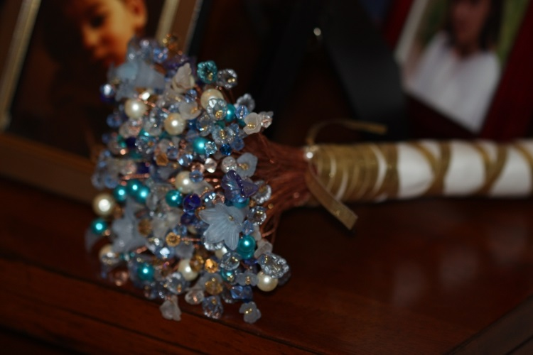
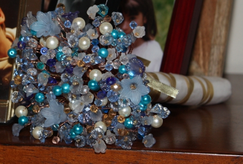
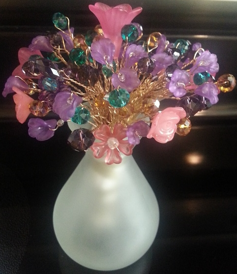

Creations
I always enjoy learning a new skill!
Duffel Bag
Boxer Shorts
Pillows
Shirt
Quilt
Necklaces
My Wedding Bouquet
To the left is Patty, my Maid of Honour, and myself on the big day. I made a bouquet for each of us, using about a third more stems in mine.
After researching the cost of real flowers, I decided to look into other options. I quickly stumbled upon crystal bouquets, and thought they were beautiful!
I didn't want to part from the idea of flowers entirely, so I decided to also incorporate flower shaped beads along with the crystals and pearls. It really surprised me that I couldn't find any instances on the internet of other people thinking to do this.
I read this tutorial for the technique to make the stems. I purchased almost all of the beads from ebay, and used 24 gauge solid copper wire. Because the copper wire was bare, I asked my wonderful mother-in-law, Maryann to spray the stems with a protective clear coat to keep the copper shiny for years to come. Maryann works with bare copper wire as an artist, you can check her out at Curliosity.
However, when it came time to complete the bouquets, I wanted to do something nicer, and after some searching found this YouTube video . That is how I learned to use satin wrapped around and pinned in place to cover the stems, then I added the gold ribbon to fully secure the satin and complete the look.
The bouquets were a huge hit!
Everyone complemented us on how beautiful they were, and loved the idea as a souvenir!
 
Mini Bouquets
-
Pink & Black Mini-Bouquet


-
Pink, Purple, Teal, & Gold. Made as an engagement gift for a friend, these are her wedding colors.

-
Red, White, & Blue for the 4th of July!


Boutonnières
Ben-Name & Interests
Created 2011
The cat is meant to be our cat Zoe, a tiny black cat, Ben got her a few months before we met.
The cube with the heart is a Companion Cube from the game Portal which is one of Ben's favourites!
The computer with 2 monitors is meant to represent Ben's work space. The computer tower case is modelled after the case he custom painted with his mother, back when he was in High School.
The lily is for me.
The divided circle is meant to be a cheese pizza, our favorite food!
The ring is supposed to look like my engagement ring.
The frog is there because Ben loves frogs, and collects frog décor.
The Android guy is for Ben's initial love of the Android operating system and it's potential.
Beach
Created March 24, 2013
Lily-pad
Created June 23, 2013
Dark Desert
Created 2012
Butterfly
Engagement Dish


Created 2011 - made during a ceramics class taken through the City of Chandler Parks and Rec Department.
The tiny black cat Zoe, is our cat.
The ring with Love is my engagement ring.
The 4 arrows with DDR is for Dance Dance Revolution which I had never played before meeting Ben, but we played together pretty often.
The hot air balloon with Albuquerque is for our first trip together where we went to see the Albuquerque International Balloon Fiesta!
The couple holding hands with Dance is for the dance classes we took together.
The money coins and Talking Stick is for Talking Stick Resort which is where Ben decided to marry me during a stay-cation.
The person sawn in half with Copperfield is for our first trip to Las Vegas where we saw David Copperfield live and Ben was chosen to be a participant in an illusion.
The boat with para-sailer and New York is for the trip we took to New York to see Ben's family. While there Ben and I went tandem para-sailing on Lake George.
The sand castle and Youngstown is for the trip we took back to Youngstown, Ohio where I am from, over our 1 year anniversary. While there we saw a sand sculpture contest at Mill Creek Park.
The cactus and Arizona is for where we made our home and fell in love.
Sunny Bowl
Dark Waves
Butterfly at Night

Created 2011 - made during a ceramics class taken through the City of Chandler Parks and Rec Department.
This was the first item made in the class.
Everyone had the same basic shape to start then we individualized them from there.